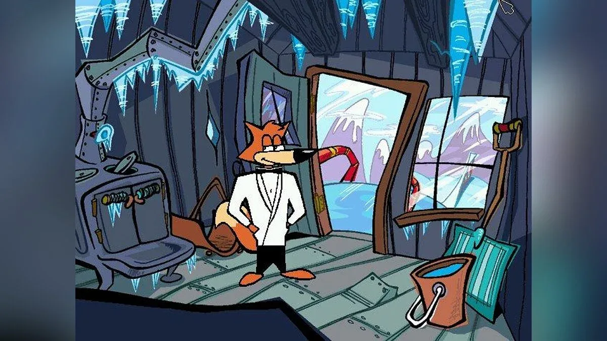

THE LOST FILES / NO. 002❄ −32°C
A VERY
COLD
CASE.
One fox. Zero backup.
A suspicious amount of frozen fish.
Somewhere beneath the ice, a villain is putting the world on pause. Max would prefer it shaken.
OPEN THE DOSSIER ↗POINT. CLICK. SAVE THE WORLD.SCROLL TO DECLASSIFY ↓

LIVE FEED · CAM 02LOCATION: ICEBERG UNKNOWN
SUBJECT: IMPECCABLY DRESSED
SUBJECT: IMPECCABLY DRESSED
SECRET
EXHIBIT A — THE COLD SHOULDER↗ ENHANCE? NICE TRY.
BAD GUYS NEVER TAKE A SNOW DAY✳NEITHER DOES MAX✳KEEP YOUR COOL. LOSE THE VILLAIN.✳
01 / THE SITUATION
Something's
fishy.
Literally.
OPERATION: COLD SHOULDER
At 03:07, every sardine on Earth pointed north. By breakfast, the oceans had started making dial-up noises.
Behind it all? Professor Permafrost and his Freeze-O-Matic: a machine built to turn the planet into one enormous ice cube. His motive is still unclear. His electricity bill is not.
Enter Max. Armed with a bow tie, questionable gadgets, and a complete disregard for sensible footwear.
02 / Q BRANCH, PROBABLY
Small gadgets.
Big “probably.”
Field-tested. Mostly.
Please do not lick the equipment.
03 / INTERCEPTED TRANSMISSION
“
The door was locked. The window was frozen. Fortunately, the villain had left a perfectly good plot hole.